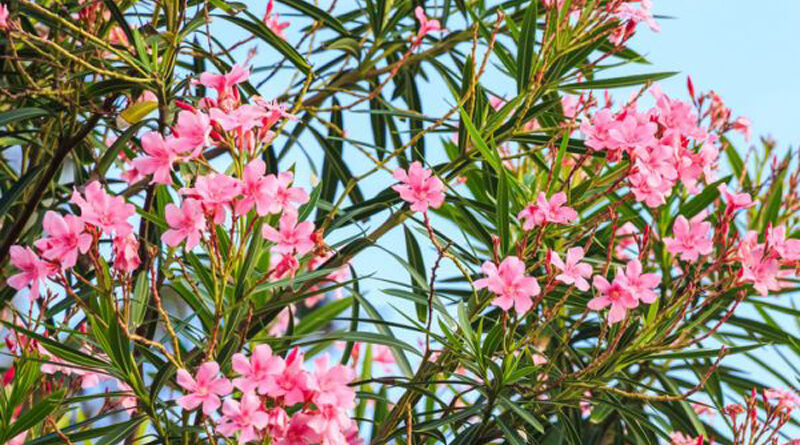
Oleandro (Nerium oleander)
Tamanho: médio
Solo: bem drenado, moderadamente fértil
Ideal para sebes e áreas urbanas com pouca manutenção.
Projeto alinhado ao Objetivo de Desenvolvimento Sustentável 15 — Vida sobre a Terra. Incentivamos voluntários a registrar e proteger árvores nativas em áreas urbanas.
Benefícios ecológicos: controle de erosão, sombra, sequestro de carbono e habitat para fauna urbana.

Fichas com informações básicas sobre espécies de uso urbano e seus benefícios ecológicos.

Tamanho: médio
Solo: bem drenado, moderadamente fértil
Ideal para sebes e áreas urbanas com pouca manutenção.
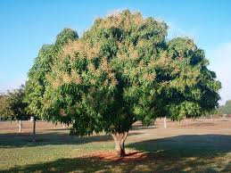
Tamanho: grande
Solo: profundo, fértil, boa drenagem
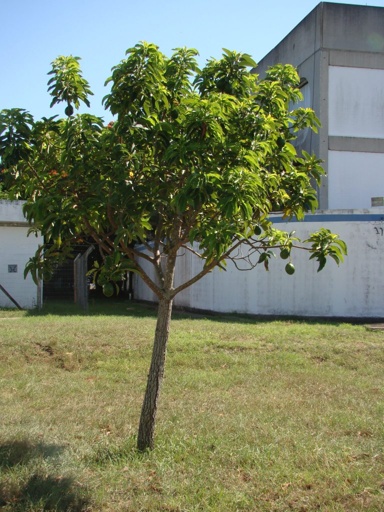
Tamanho: grande
Solo: rico, úmido, bem drenado
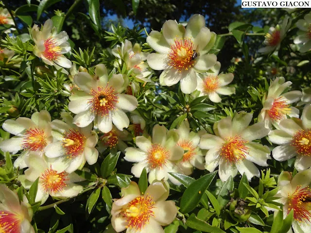
Tamanho: pequeno a médio
Solo: bem drenado, suporta seco
Planta nativa rica em proteínas, ótima para hortas urbanas.
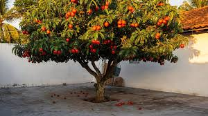
Tamanho: pequeno
Solo: fértil, úmido a moderado
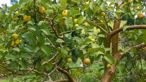
Tamanho: médio
Solo: fértil, levemente ácido
Frutos doces e atraentes para aves e insetos.
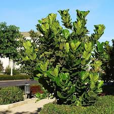
Tamanho: grande
Solo: profundo, rico, bem drenado
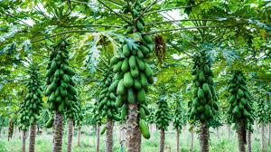
Tamanho: pequeno a médio
Solo: profundo, fresco, rico em matéria orgânica
Rápido crescimento e frutas consumíveis em áreas verdes.
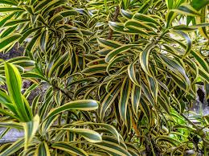
Tamanho: pequeno a médio
Solo: bem drenado, tolera sombra
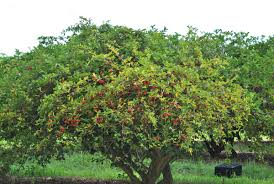
Tamanho: pequeno
Solo: fértil, bem drenado
Planta frutífera rica em vitamina C, excelente para quintais.
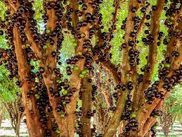
Tamanho: médio
Solo: rico, úmido, bem drenado
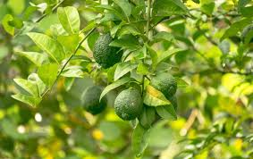
Tamanho: pequeno a médio
Solo: fértil, bem drenado